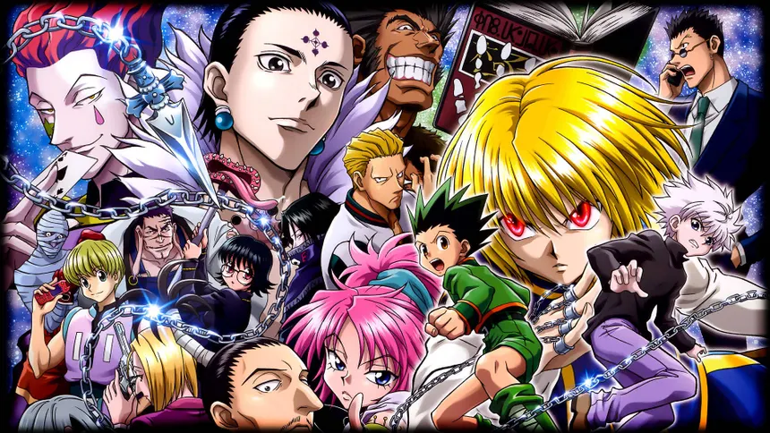

Haz click aqui.
Hunter × Hunter (ハンターハンター) es una serie de manga escrita e ilustrada por Yoshihiro Togashi. La historia tiene como protagonista a Gon Freecs, un niño de doce años que desea encontrar a su padre a toda costa, por lo que decide convertirse en «cazador», justo como él, y de alguna forma hallar su paradero. A medida que avanza la historia, Gon se hace amigo de otros tres aspirantes a cazador: Leorio, Kurapika y Killua, quienes lo acompañarán en sus aventuras a lo largo del anime. En Latinoamérica fue anteriormente conocida como Cazador X.